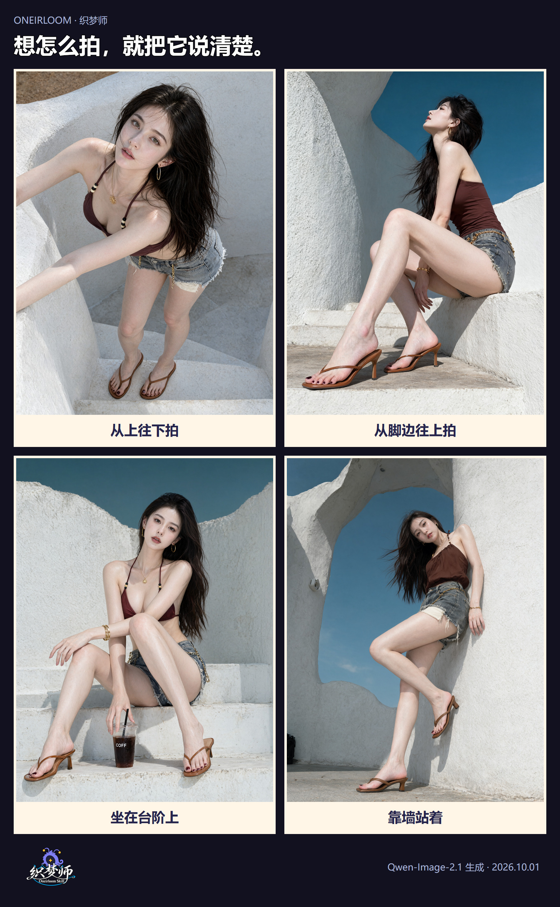
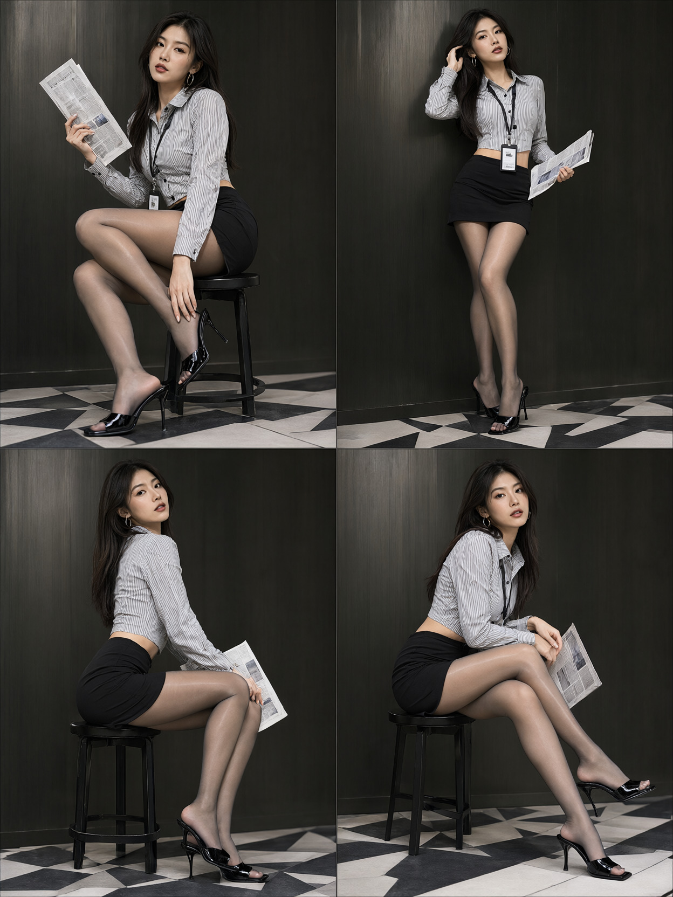
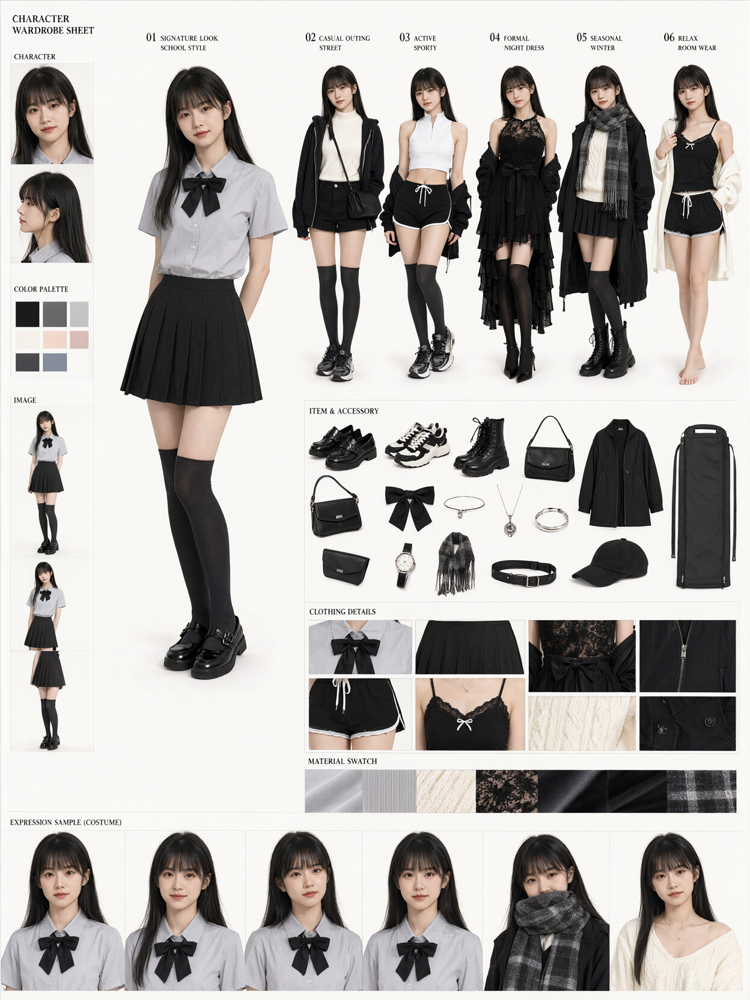
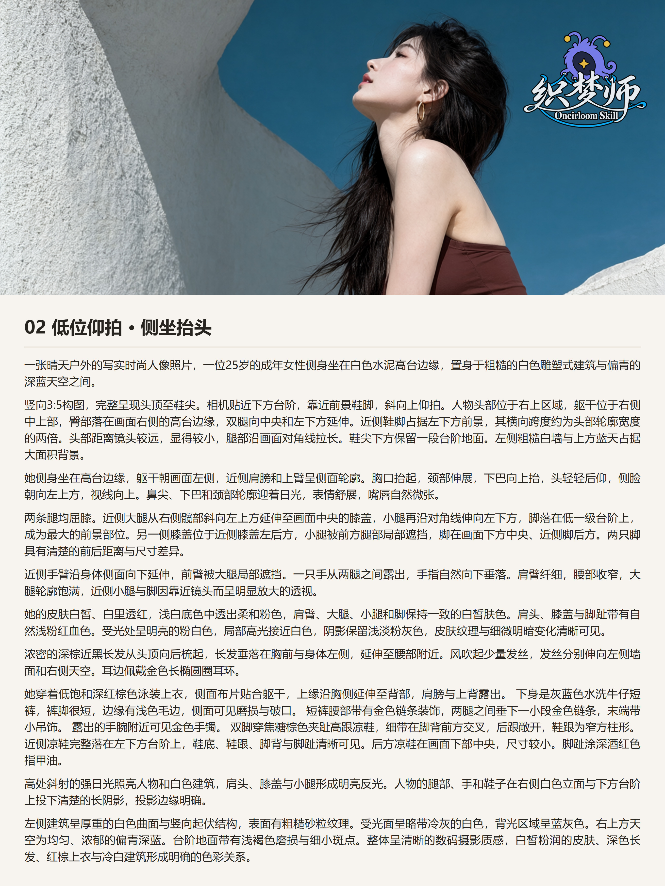

织梦师开源了：帮你把想画的图说清楚
想让 AI 从下面往上拍，它却把相机放得和人脸一样高。说了要全身，鞋子还是没进画面。
看起来只差一点，来回改了几次，还是对不上。
我把看图、写要求、检查结果这些做图时常用的方法，整理成了「织梦师」。现在已经开源，大家都可以拿去用。
它是一个 Skill，可以理解成给 AI 助手用的做图说明书。装好以后，你用平时说话的方式告诉它想画什么，它帮你把要求写清楚，再交给你平时用来生成图片的工具。
先看今天做的这组图。都是白墙、台阶和蓝天，有的从上往下拍，有的从脚边往上拍。人站在哪里、坐在哪里，相机放在哪里，出来的照片就很不一样。

你可以直接说：我想照着这张图画。
比如下面这张，鞋子离镜头近，显得比较大。人坐在高一点的台阶上，抬着头，脸离镜头更远。

要说清楚这张图，就得写明白：相机靠近哪只脚，人坐在哪里，腿往哪边伸，头朝哪里看。
织梦师会帮你找出这些细节。你可以把喜欢的图片发给助手，再说：
用织梦师帮我看看这张图。我想要差不多的拍摄角度和姿势，人物换成我想画的。帮我把要求写完整，只要中文。
如果你发了好几张图，也可以说清楚：照着第一张的姿势，第二张的衣服，第三张的颜色。
整理出来的这段要求，就是常说的「提示词」。你可以把它放进你用的画图工具里，看看实际画出来是什么样。
还可以让它帮你做一张杂志封面。
这是最近做的海滩封面。大标题放在上面的蓝天里，小字放在两边，中间留给人物。
想做这种图，你可以直接告诉它：标题写什么，要大一点还是小一点，放在上面还是旁边。
织梦师会帮你安排人物、背景和文字。出来以后，再看看有没有字写错了，标题有没有挡住脸。
也能给一个人物试几种姿势、搭几套衣服。
下面这张，把四种姿势放到了一起：坐着拿报纸、站着拨头发、侧着身坐、转过脸看镜头。

做这种图，就把每一格分别讲清楚。左上坐着，右上站着，手放哪里，脸朝哪里，都可以让助手帮你写。
想给人物换几套穿搭，也可以把衣服、鞋子、包和小配饰一起摆出来，方便看哪一套合适。

这些都是最近实际生成的图。换成你的人物和衣服以后，看看脸有没有变，姿势有没有画对，再接着改。
画得不满意，就把图发回来继续改。
比如鞋子被裁掉了，你可以这样说：
鞋子没拍全，帮我改成从头到脚都能看见。衣服、房间和光线尽量保持原来的样子。给我改好的完整提示词。
织梦师会结合结果图和原来的要求，帮你找要改的地方。你也可以只改一件事，比如把手放下来，或者把背景换成海边。
遇到一张满意的图，还能把图片和当时用的提示词排在一起，留着下次用。

今天这组图就做了这样的卡片。右上角那个牵着蓝线的小家伙，是我们的织梦兽。
除了这些人像和封面，织梦师也有做产品广告、插画和设计人物的方法。你用 Krea 2 或 Qwen-Image-2.1，也可以告诉助手，让它按你用的工具整理提示词。
默认给中文和英文两份，想只要中文，直接说就行。
想试的话，拿一张你喜欢的图开始。
项目里有安装方法。装好后，把图片发给 AI 助手，说一句：
用织梦师，帮我看看这张图是怎么画的。我想做一张类似的，帮我把要求写清楚。
欢迎拿去试，也欢迎把你的图发来交流。喜欢的话，也欢迎在 GitHub 上给它点个星。